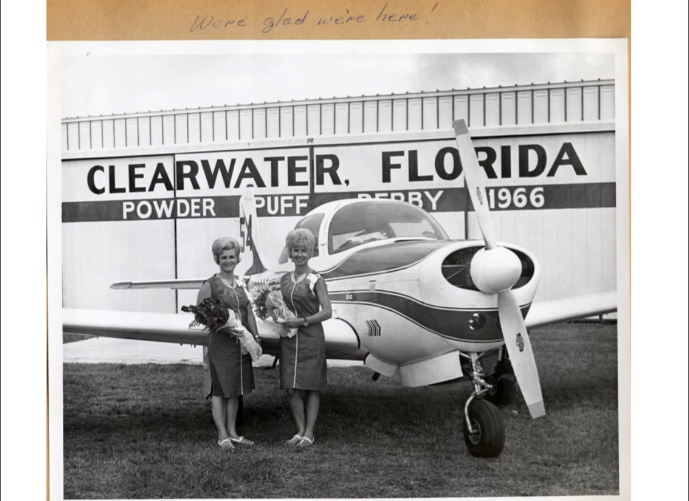

Aircraft Overview
"The best airplane ever built"? Maybe! This Meyers 200 has been so much fun to fly over the past year of ownership. It is a high‑performance, all‑metal, four‑seat aircraft built with extraordinary craftsmanship.
- Model Year: 1966
- Engine: Continental IO‑550
- Max Cruise: 225 mph
- Serial Number: 309
Restoration Details
Work since purchase has focused on restoring the aircraft's mechanical condition. New hoses, resealed struts, new bushings, servicing the hydraulic system, new hardware.
Photos



Special Features
This Meyers 200 is one of only 123 built and is recognized for its strength and speed. The aircraft has a unique history including:
- Original logbooks with complete maintenance history
- No damage history
- Active participation in cross‑country air races - 1966 Powder Puff Derby